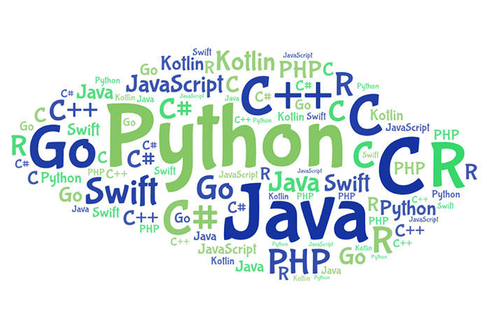
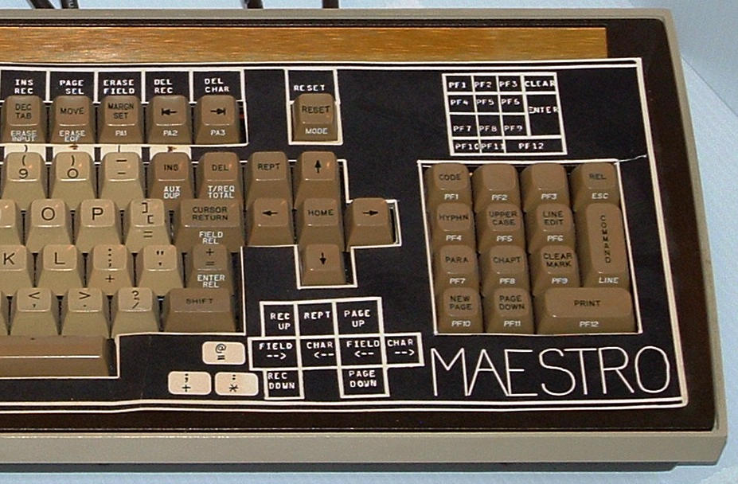

8 лучших IDE и редакторов кода для веб‑разработчиков
Писать код при желании можно и в текстовом редакторе — ничто не мешает вам создать
простейший сайт в «Блокноте», сохранив файл с расширением .html. Однако если вы хотите сделать процесс комфортнее и быстрее, стоит обратить внимание на интегрированные среды разработки (Integrated Development Environment, IDE) или продвинутые редакторы. В этой подборке мы собрали 8 популярных платформ, которые предлагают удобные функции для веб-разработчиков.
Обзор
Использование ИСР для разработки программного обеспечения является прямой противоположностью способу, в котором используются несвязанные инструменты, такие как текстовый редактор, компилятор, и т. п. Интегрированные среды разработки были созданы для того, чтобы максимизировать производительность программиста благодаря тесно связанным компонентам с простыми пользовательскими интерфейсами. Это позволяет разработчику сделать меньше действий для переключения различных режимов, в отличие от дискретных программ разработки. Однако так как ИСР является сложным программным комплексом, то среда разработки сможет качественно ускорить процесс разработки ПО лишь после специального обучения. Для уменьшения барьера вхождения многие достаточно интерактивны, а для облегчения перехода с одной на другую интерфейс у одного производителя максимально близок, вплоть до использования одной ИСР.
ИСР обычно представляет собой единственную программу, в которой проводится вся разработка. Она, как правило, содержит много функций для создания, изменения, компилирования, развертывания и отладки программного обеспечения. Цель интегрированной среды заключается в том, чтобы объединить различные утилиты в одном модуле, который позволит абстрагироваться от выполнения вспомогательных задач, тем самым позволяя программисту сосредоточиться на решении собственно алгоритмической задачи и избежать потерь времени при выполнении типичных технических действий (например, вызове компилятора). Таким образом, повышается производительность труда разработчика. Также считается, что тесная интеграция задач разработки может далее повысить производительность за счёт возможности введения дополнительных функций на промежуточных этапах работы. Например, ИСР позволяет проанализировать код и тем самым обеспечить мгновенную обратную связь и уведомить о синтаксических ошибках.
Большинство современных ИСР является графическим. Но первые ИСР использовались ещё до того, как стали широко применяться операционные системы с графическим интерфейсом — они были основаны на текстовом интерфейсе с использованием функциональных и горячих клавиш для вызова различных функций (например, Turbo Pascal, созданный фирмой Borland).
История
Первые ИСР были созданы для работы через консоль или терминал, которые сами по себе были новинкой: до того программы создавались на бумаге, вводились в машину с помощью предварительно подготовленных бумажных носителей (перфокарт, перфолент) и т. д.
Dartmouth BASIC был первым языком, который был создан с ИСР, и был также первым, который был разработан для использования в консоли или терминале. Эта ИСР (часть Dartmouth Time Sharing System) управлялась при помощи команд, поэтому существенно отличалась от более поздних, управляемых с помощью меню и горячих клавиш, и тем более графических ИСР, распространённых в XXI веке. Однако она позволяла править исходный код, управлять файлами, компилировать, отлаживать и выполнять программы способом, принципиально подобным современным ИСР.

Maestro I — продукт от Softlab Munich, был первой в мире интегрированной средой разработки для программного обеспечения в 1975 г. и, возможно, мировым лидером в этой рыночной нише в течение 1970-х и 1980-х годов.
Он был установлен у 22000 программистов во всем мире. До 1989 года 6000 копий было установлено в Федеративной Республике Германия. Ныне Maestro I принадлежит истории и может быть найден разве что в Музее информационной технологии в Арлингтоне. Одной из первых ИСР с возможностью подключения плагинов была Softbench.
Что такое IDE и зачем она вам
Видеоролик доступно объясняющий суть IDE
Существует немало функций IDE, которые вы вряд ли встретите в более простых инструментах, особенно если работаете над созданием веб-приложения или довольно сложного сайта. Вам, скорее всего, пригодятся:
- Компилятор: превращает ваш код в исполняемый файл.
- Интерпретатор: запускает скрипты, которые не нужно компилировать.
- Отладчик: позволяет находить проблемные места и ошибки в коде.
- Инструменты автоматизации: помогают автоматизировать сборку проекта и ускорить процесс разработки.
На что обратить внимание при выборе среды разработки
- Поддержка нужной вам операционной системы (ОС). Особое внимание этому пункту стоит уделить, если вы работаете в команде. Лучше всего отдавать предпочтение кроссплатформенным решениям.
- Возможности совместной разработки. Это опять же относится к командам, собирающимся работать с общим репозиторием. Многие платформы, которые мы рассмотрим ниже, интегрируются с Git.
- Поддерживаемые языки (программирования, разумеется). Здесь не забывайте о долгосрочной перспективе — вдруг когда-нибудь вы решите добавить в проект возможности, реализуемые на каком-либо другом языке. Стоит выбрать среду, которая поддерживает несколько языков программирования.
- Цена вопроса. Есть много бесплатных решений с открытым исходным кодом. Однако, как обычно бывает почти со всем подобным программным обеспечением, стоимость зависит от количества доступных функций.
Чтобы помочь вам определиться, мы собрали 8 лучших IDE и редакторов кода, которые поддерживают популярные языки для веб-разработки (HTML, CSS, JavaScript, PHP и Python). Сразу оговоримся, что это не топ, а список (первый — не значит лучший, последний — не значит самый плохой). Поэтому вы можете выбирать любой инструмент, исходя из своих нужд и предпочтений.